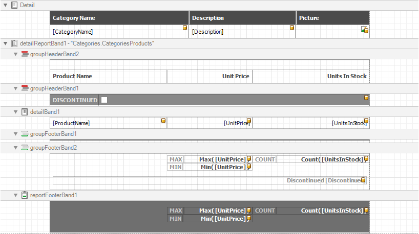

Specify Summary Options
Note
This wizard step is only available if you have applied data grouping in the previous step (Add Grouping Levels). If you have not grouped data, this step is skipped.
On this wizard page, you can specify summaries to calculate in the selected reports.

Use the drop-down list at the top of the wizard page to choose a required report.
In the Fields table column, you can select an available numerical or date-time field. To specify which functions should be calculated for the selected field, enable the corresponding check boxes in the Summary functions drop-down.
The specified summaries are displayed in the report footer and after corresponding groups (if you have grouped report data on the previous wizard page).
If data fields can contain empty values and you do not want to take these values into account when calculating totals, select the Ignore null values check box. Otherwise, these values are treated as zeros for numeric fields and the earliest system date for date-time fields.
You can stop the wizard at this step by clicking Finish. The created report looks similar to the image below.

If you want to customize the report further, click Next to proceed to the next wizard page: Set the Report Title.